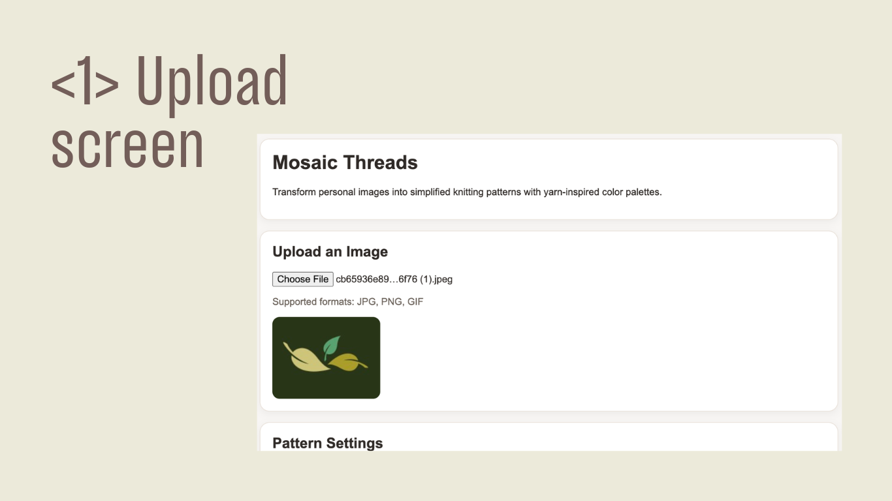
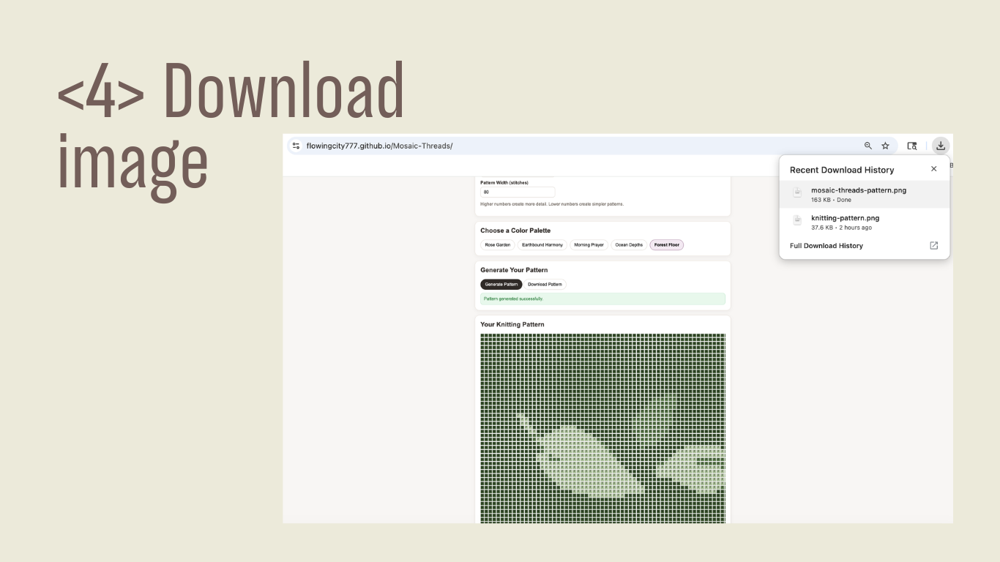
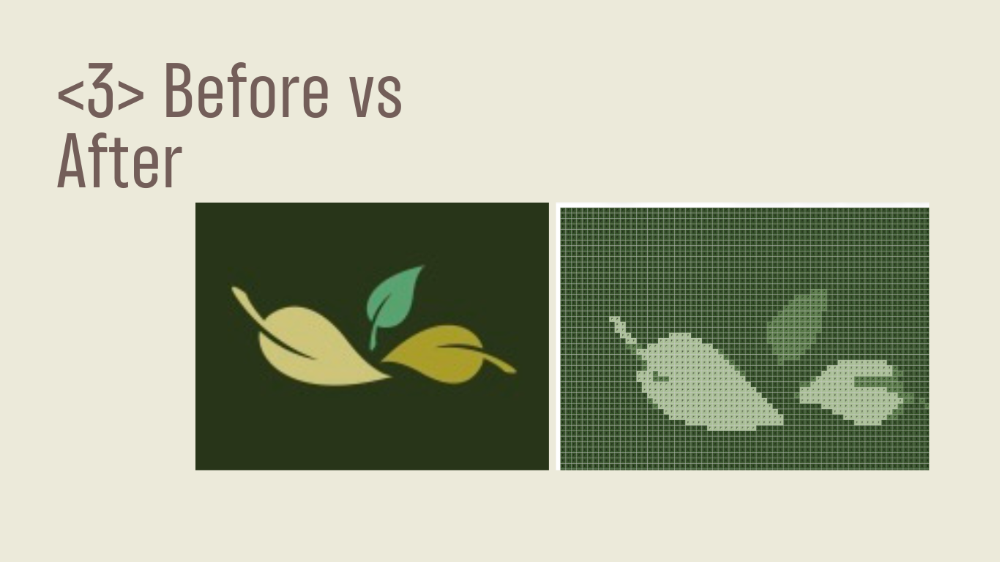

Bridging the gap between photos and knittable patterns
Knitters often want to recreate meaningful images—such as pets, memories, or favorite artwork—but most existing image tools are either too technical or not designed for knitting constraints.
What users need
- A simple way to upload and transform a personal image
- Limited, harmonious colors that feel realistic for yarn
- A result that is readable as a knitting chart, not just visual art
Core insight
Knitters do not think in pixels. They think in stitches, rows, and yarn constraints. A usable pattern is better than a perfect image.
Designing for clarity, not just accuracy
Mosaic Threads simplifies uploaded images into knitting-friendly charts by reducing colors, mapping them to curated palettes, smoothing noise, and generating readable stitch-based output.
Image upload
Users can upload personal photos directly in the browser and instantly preview the source image.
Palette mapping
Images are translated into curated yarn-inspired palettes such as Rose, Ocean, and Forest.
Pattern generation
The system converts the image into a stitch grid, adds symbolic labels, and provides row-by-row guidance.
Turning a prototype into a usable tool


Improving pattern usability through refinement
The initial output was functional but visually noisy. Through palette constraints, smoothing, and readability improvements, the pattern became significantly more practical for real knitting use.

What changed
- Added curated palette constraints instead of using raw image colors
- Improved visual matching with weighted color distance
- Introduced smoothing to remove isolated noisy cells
- Added labels and row-by-row chart instructions for readability
- Included adjustable pattern width to balance detail and simplicity
Designing within real-world crafting constraints
Too many colors
Photos contain thousands of colors, but knitting patterns need a small and manageable palette.
Noise vs readability
Raw pixel conversion created distracting visual noise, so smoothing became essential.
Detail vs usability
More detail is not always better. Grid-size control helped balance image fidelity with practical making.
A functional prototype with a clear user value
Users can start with a personal image and see an immediate preview.
The prototype creates stitch-based patterns with palette mapping and simplified structure.
Patterns can be exported as PNG files for offline reference and making.
What I learned
Good UX is not about adding complexity. It is about translating real-world constraints into systems people can actually use.
Next steps
- Export patterns as PDF with full instructions
- Add yarn-brand-based palettes
- Offer adjustable smoothing levels
- Support pattern formats for blankets and sweaters